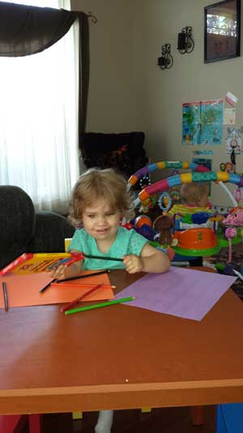
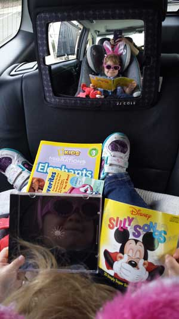
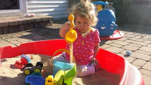

“Play is the highest form of research.” - Albert Einstein
“Old-Fashioned Play Builds Serious Skills”
Wholesome Horizons Learning Center places a strong emphasis on play and children are allowed a great amount of free play time during the day in which to stretch their imaginations. Weather permitting, children will spend time outdoors every day. We also provide slightly more structured learning opportunities, especially as children get closer to school age. Our structured curriculum introduces skills that will ensure success in kindergarten and beyond.
Infants and toddlers
Our goal is to make your infant’s transition away from home as easy and natural as possible, both for your baby and for parents. Each infant’s schedule and program will be individualized to support your baby’s needs, and will be created and monitored with input from parents. Daily records are sent home to inform you about your baby’s day with information about feeding, diapering, and activities. We make sure that your baby receives as much attention as possible throughout the day, making sure to hold and cuddle, as well as actively play with your baby. We will constantly talk, sing, and read stories to your baby. We love to “baby wear” and have many choices of wraps, carriers, and slings for your baby to choose from on days where they just want to be held and cuddled! As your baby becomes more mobile and active, we have an abundance of infant toys that will provide them with days full of educational play.
Toddlers are increasingly becoming more active as they master gross and fine motor skills and begin to establish independence and socialization. They begin to establish friendships, develop self-help skills, and express themselves through their rapidly developing language. Toddlers are provided ample time throughout the day to engage in a variety of imaginative play activities, arts and crafts, music and dance, and housekeeping activities. Play is the most important and natural way for children to learn and there will be ample time throughout the day for children to choose their play activities. Our preschool curriculum and themes are extended as much as possible to our infants and toddlers through supplemental, age-appropriate activities.
We will regularly communicate with you regarding your infants and toddlers to inform you of our observations about your child’s motor, cognitive, language, and social development.
Above all, our goal is to provide your child with a safe and loving environment where they feel safe and nurtured, and can develop confidence, self-esteem, and a love of exploration and learning.
Preschoolers
Our preschool program, while still offering a large amount of time for free, imaginative play also provides slightly more structured activities that will help prepare your child for kindergarten. Children participate in daily calendar and circle time activities where they will be introduced to such things as colors, numbers, shapes, and letters through song and dance. Learning centers such as library, dramatic play, art, science, and math will promote pre-reading and pre-math skills through developmentally appropriate play and practice. Our goal is that your child will finish our program with a love of exploration and learning, and the skills necessary for future success in school.
School-Age
School-age children will be provided an ample amount of time for relaxation and age-appropriate play both before and after school. We feel it is important to provide children with time to wind down and rest their minds after a long day of learning. We will support what they are learning at school as much as possible by having a check-in time immediately after school where they can share aspects of their day. As a licensed teacher with the Illinois State Board of Education, I am happy to also provide homework help and additional support as needed and requested.
